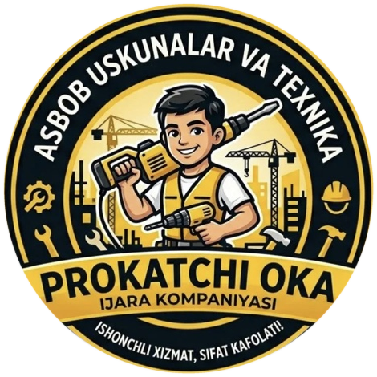
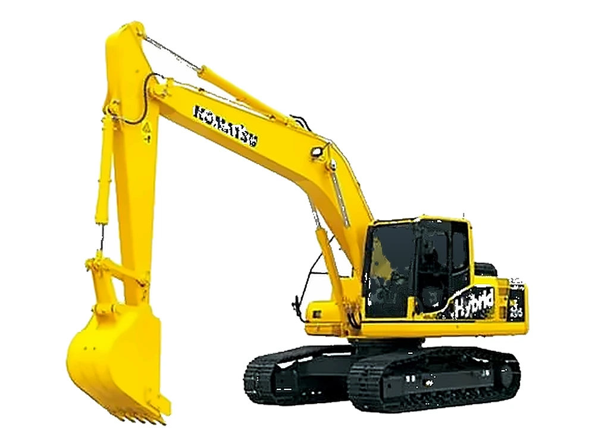
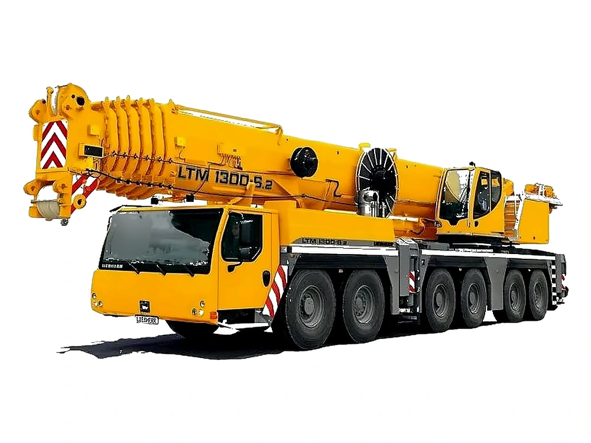
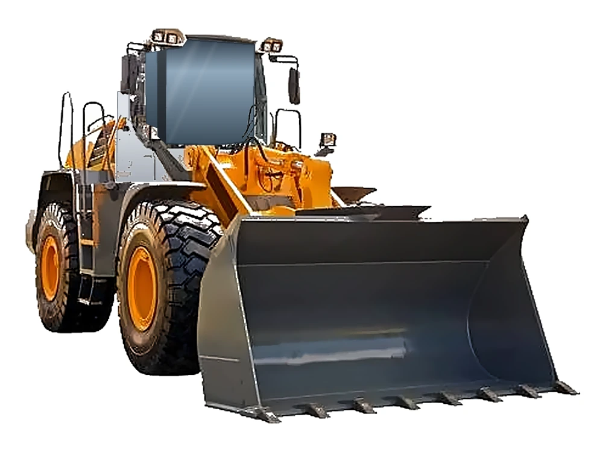
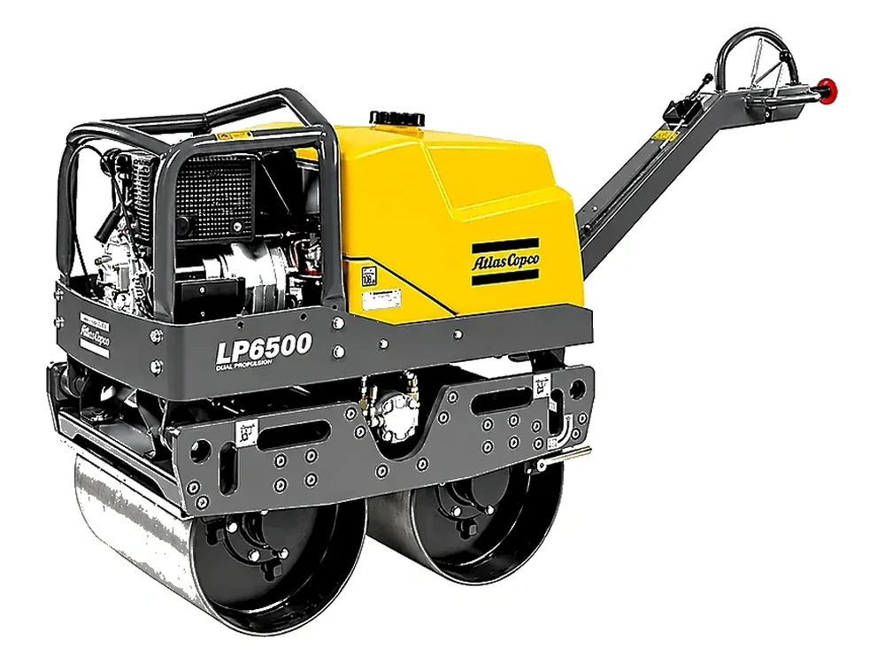
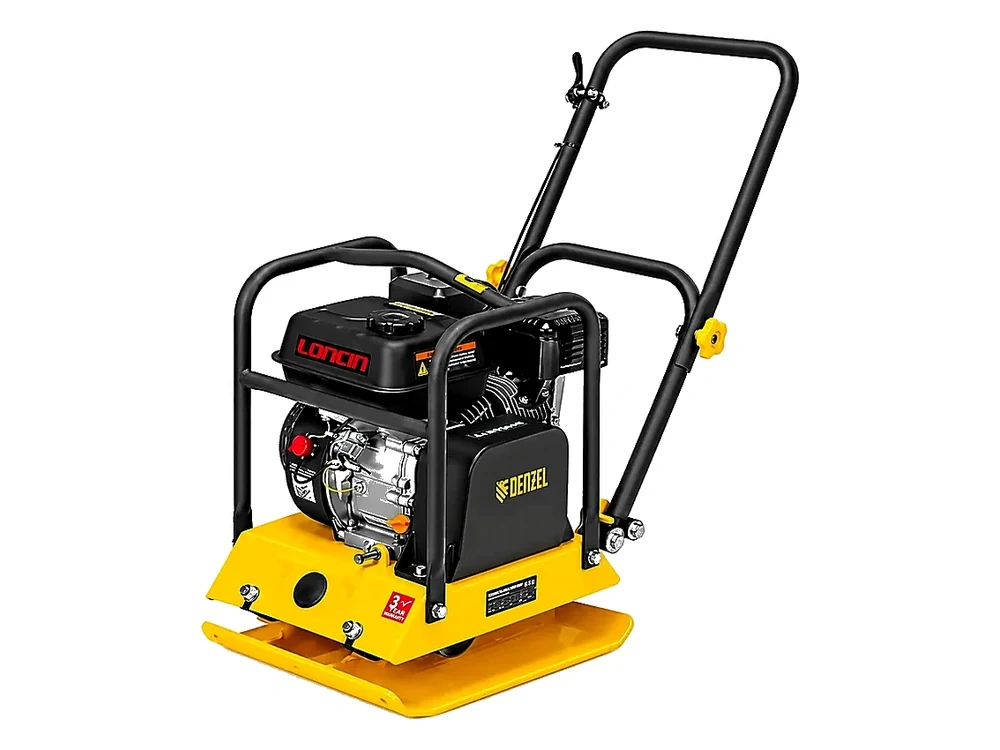
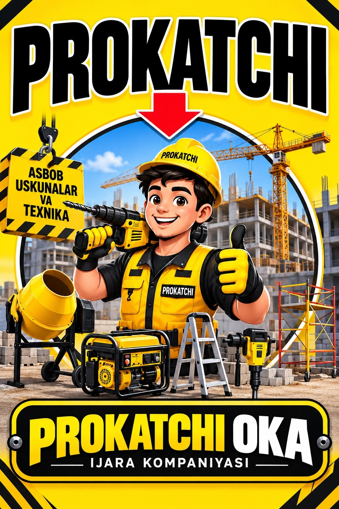

24/7 onlayn so‘rov
Sayt orqali istalgan payt so‘rov yuborish mumkin. Operator narx va mavjudlikni tasdiqlaydi.

PROKATCHI OKA Sayt yuklanmoqda...Qurilish va ta’mirlash uchun kerakli uskunalarni bir joydan toping. Katalogni ko‘ring, ma’lumot oling va kerakli filial bilan bog‘laning.





USKUNALAR TURLARI
IJARAGA OLINADIGAN USKUNALAR
Texnika turlari alohida bo‘limlarda. Narx va mavjudlikni filial operatori tasdiqlaydi.

Uskunalarni ko‘rib chiqing, sizga qulay filialni tanlang va ijara shartlarini telefon orqali aniqlang.
Filiallar bilan bog‘lanishNIMA UCHUN BIZ?
Sayt orqali istalgan payt so‘rov yuborish mumkin. Operator narx va mavjudlikni tasdiqlaydi.
Katalogning katta qismiga kunlik ijara narxlari kiritildi, bu tanlovni tezlashtiradi.
Gulzor va Ibn Sino filiallari orqali tezkor bog‘lanish va joylashuvni xaritada ko‘rish mumkin.
Sayt telefon, planshet va desktopda qulay ishlashi uchun responsiv tarzda optimallashtirilgan.
IJARA JARAYONI
Katalogdagi rasm, nom va tavsiflarni ko‘rib chiqing.
Gulzor yoki Ibn Sino filialiga qo‘ng‘iroq qiling.
Narx, mavjudlik va ijara muddatini operator bilan tasdiqlang.
MANZIL VA KONTAKTLAR
Ikkala filialning telefonlari va xaritadagi joylashuvi quyida.
Telefon yoki ijtimoiy tarmoqlarimiz orqali bog‘lanishingiz mumkin.
So‘rovingiz operator tomonidan tasdiqlanadi.